Staff
Instructors
Justin Yokota he/him
Hi All! I’m Justin (he/him), one of the co-instructors for 61B and 61C this semester. As an undergraduate, I did a double math/CS major, and completed a fifth-year masters in a parallel computing project (all at Berkeley). I additionally worked as a TA for nine semesters, with a focus on exam writing. Outside of work, I spend most of my time playing Celeste (9D is brutal) and solving/writing puzzles as part of BMT and teammate. Part 1 of 2: Literal wariness snacks overpays, but fries alert scams. Foaming clams?

Peyrin Kao
Hello, I’m a second-year lecturer in EECS (so don’t call me Professor please). I did my undergrad at Berkeley, where I TA’d for a few classes (including CS 61C, CS 161, and CS 188 once). Then I did a masters’ at Berkeley, where I studied computer science education with Nicholas Weaver and Dan Garcia. This is my second time teaching CS 61B as co-instructor, so any feedback/advice/complaints are appreciated!
TAs

Abby Brooks-Ramirez she/her
hi hi! I’m a junior studying CS with a minor in ethnic studies. In my free time I love reading, buying too many plants, concerts, and hitting the gym with aerial at cal! feel free to reach out & I’m excited to meet y’all :,)
Aditya Hariharan he/him/his
Hey everyone, I’m Aditya, and I’m a second year studying CS and Business. Outside of teaching, I really enjoy watching sports, brunch, photography, yapping endlessly, motivational quotes, deadlifting, and trying new things. Super excited to meet you all, and feel free to reach out about anything!

Allen Gu he/him/his
heyo! i’m a 4th year eecs major and this is my 5th time teaching 61b! i love music of all kinds, soccer, volleyball, and oranges. feel free to reach out about anything and everything! hope you enjoy your time in 61b :D
Andrew DeMarinis he/him/his
Hello, I’m AJ this is my first semester teaching for 61B, my favorite things to do are cooking and eating.
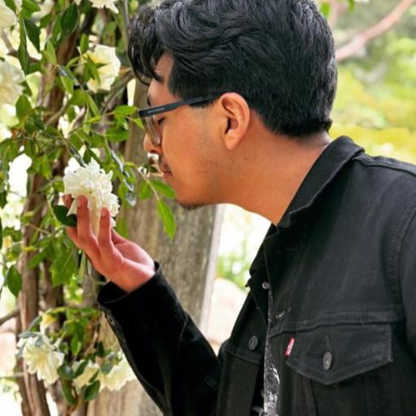
Angel Aldaco he/him
Hello there! I’m a 4th-year majoring in Computer Science and Political Science and minoring in Journalism! You can usually find me wearing bright red beats headphones probably listening to some Bowie or some OSTs. Right now, as I’m writing this I am reading Tomorrow , and Tomorrow, and Tomorrow but I also enjoy watching Better Call Saul, Succession and Ghibli movies. I also really love playing piano and Super Metroid! I hope to be as helpful to you as a data structure is to an algorithm/project! So feel free to reach out (especially if you have any recommendations for books movies tv shows life)!

Anirudh Sreerama he/him/his
Hello everyone! I’m Anirudh, a sophomore majoring in Math and CS from the Bay. In my free time, I LOVE playing video games like Smash (Kirby is the best) and Overcooked with friends, especially when we’re working together as a team! I also really enjoy speed-solving Sudokus and KenKens whenever I’m bored. This is my first semester as a TA, so I’m super duper excited to work with you all :)
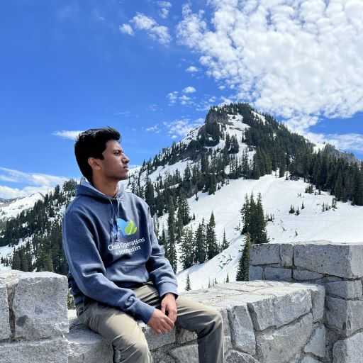
Aniruth Narayanan he series
Hey! I’m Aniruth, a senior eecs + business major from Florida, but I can convince anyone that I’m from the bay area. This is my 4th time on staff (I think). Happy to talk about data structures, career, or life. I like rewatching the Rush Hour movies and Ocean’s Eleven. I used to live in the living room but now I have a door

Anniyat Karymsak he/him/his
Hi! My name is Anniyat and I am a junior from Kazakhstan. Apart from teaching, I really enjoy watching detectives, ballroom dancing, and listening to Frank Sinatra’s songs. When it comes to food, I am (unhealthily) obsessed with Seoul Hotdog!
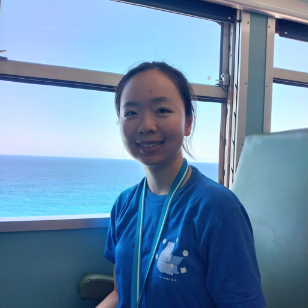
Ashley Kao she/her/hers
Hi! I’m Ashley and I’m a third-year EECS major from Irvine, CA. This is my fourth time on 61B(L) staff. I like cats, wintermelon tea, public transit, shiny Pokemon, cursed data structures, and 61bees. Looking forward to meeting you all!

Austin George he/him/his
yooo, I’m austin! i’m a senior majoring in CS and this is my third time TAing for 61b. this class was easily my favorite course at Berkeley and hopefully I can share that excitement with y’all. i love running, hiking, and very spicy food. rule #1 in my discussion, judgement leaves at the door. let’s have a good semester! :D

Ayati Sharma she/her
Hii, I’m Ayati! I’m a junior from India studying CS and Linguistics. This has been my favourite class so far and I’m super excited to be teaching 61B again! I really enjoy reading, music and learning about art history and the brain. Currently trying to explore San Francisco more! Feel free to reach out anytime and looking forward to meeting everyone :D
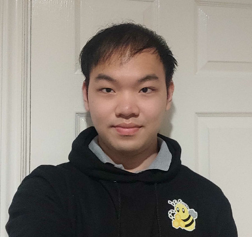
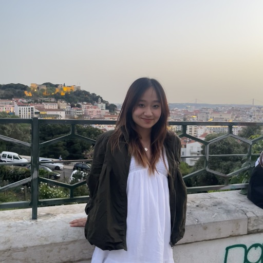
Claire Lee She/her/hers
Hi! I’m Claire, fourth year studying CS! The is my fourth time teaching CS61B, and I’m super stoked :) I enjoy trying new things, exploring new coffee shops, and traveling. Look forward to meeting you all!

Cyrus Hung he/him/his
Hey! I’m a third year CS major from Hong Kong. I am a huge foodie and love trying new cuisines and baking in my free time. My other hobbies include playing smash, reading, and taking care of my 6 cats and 1 dog when I’m back home. Looking forward to meeting you all and reach out to me anytime for anything (especially if you want pet pics :D)

David Yang he/him/his
Hellooo everyone! My name is David and I’m a 3rd year studying CS + Linguistics from Tallahassee, Florida. In my free time, I love rock-climbing, playing piano, running, and NYT connections. Super excited for this semester and to meet yall!

Dhruti Pandya she/her
Hi! I’m Dhruti, a senior from San Diego majoring in EECS. I love to play badminton, hike (especially by the beach), explore coffee shops, try new food, and everything that’s purple in color. Feel free to reach out to talk about anything at all, 61B related or not :)

Dominic Conricode he/him/his
Hey y’all! My name is Dom, I’m a CS major from the Salinas Valley and this is my 5th semester TAing for the 61Best course. I like trying new things, and in my time here I’ve done everything from latin dance to rocket engineering to collegiate boxing. Maybe you’ll see me around trying way too hard in IM volleyball or on my mission to find the best Berkeley restaurants :)
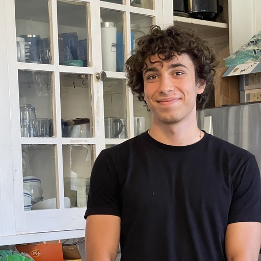
Dylan Hamuy he/him/his
Heyoooo I’m Dylan! I’m a Junior in EECS and I’m really excited support y’all through 61B. I love 61B so much and this is my 4th time teaching it. Always feel free to reach out if you have any questions about absolutely anything. I’m here to help!
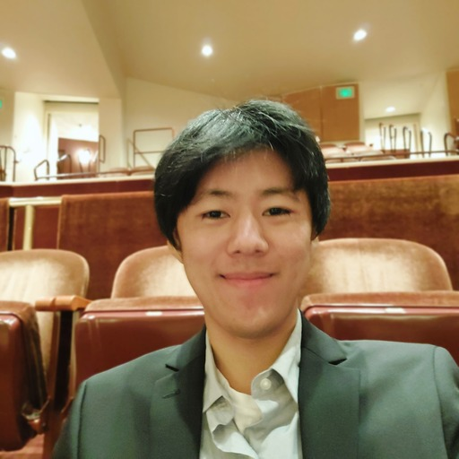
Eddie Park he/him/his
Hey! I’m Eddie, a 4th-year EECS major. This will be my 5th semester teaching 61B! Please hmu with any on-campus water fountain recs :)

Elana Ho she/her/hers
Hi! I’m Elana, a third year majoring in computer science and French. In addition to being a TA, I am also a CSM senior mentor advisor for 61B. When I’m not teaching data structures and algorithms, I enjoy drawing, learning new languages, and watching anime. I’m super excited to meet you all, and I look forward to a fun semester! Please feel free to reach out about anything :3

Elisa Kim she/her/hers
hello!! i’m elisa and i’m a junior studying eecs. this is my third semester teaching 61b and super excited to be back with you all :D i love picnics, and my favorite movie is how to train your dragon. feel free to reach out and i’m excited to meet everyone!
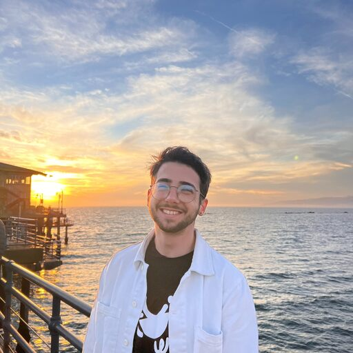
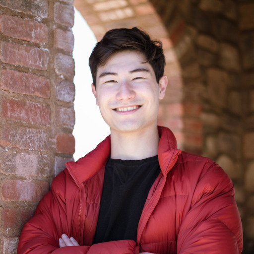
Erik Kizior he/him/his
Hey everyone! I’m Erik, a junior in EECS and I’m really excited to help teach 61B this semester. I like volleyball, Super Smash Bros, and Catan. Feel free to message me anytime!
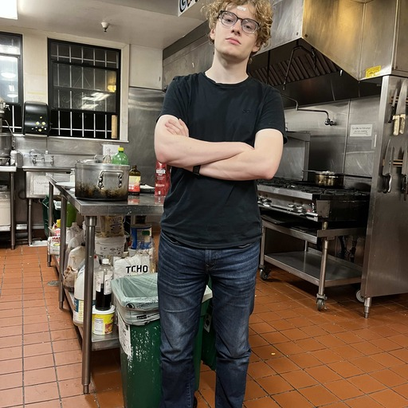
Erik Nelson he/they
Hi! I’m a fourth-year majoring in computer science. I love fashion, gaming, film, and going to concerts! I’m currently learning to dj and I also have my California bartenders license. feel free to reach out about runway shows, virtual reality, midwestern electoral politics, or anything at all!

Ethan Lo he/him/his
Hi guys! I’m a fourth year studying CS and Music from Davis and this is my 3rd sem teaching 61B! I play baseball at Cal, the cello in UCBSO, and my twin sister claims I ate her optical nerves in the womb. Hit me up if you have any questions about anything. Cant wait to meet y’all!


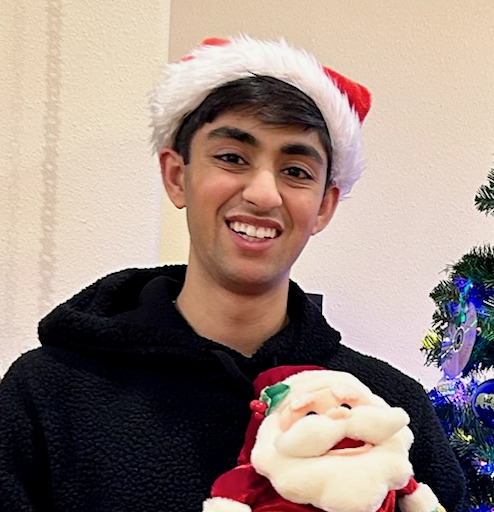
Kanav Mittal he/him/his
Hi! My name is Kanav, and I’m a third-year EECS major. My interests lie in machine learning, software engineering, and computational biology. In my free time, you can find me working out at the gym, hiking the Fire Trails, or watching sitcoms. I’m also a massive Taylor Swift fan :). Looking forward to meeting you!

Kevin Sheng he/him/his
Hi there! I’m Kevin, a junior CS major from socal, and this will be my fourth time teaching 61B(L). In my free time I like to learn about game development, cook, and workout. Feel free to ask my any questions, and definitely say hi if you bump into me!

Meshan Khosla he/him/his
Hello! I’m a 4th year CS major from the central valley. This is my 5th semester on 61B staff and I have a feeling it’s going to be the best yet. I’m a big football fan and am always happy to talk. Also, if any of the course infrastructure breaks… sorry. Hope to see you in OH, lab, and discussion!

Mihir Mirchandani he/him/his
Hi 61Besties! I’m Mihir, a 3rd year studying CS from Mountain View, CA. I’m super happy to be back for my second semester on course staff for this amazing and foundational course! In my free time, I love playing chess, piano, and going on long drives. I look forward to working with you and a fun semester!

Noah Adhikari he/him/his
updogs! i’m a fourth-year from the socal south bay studying applied math and cs and this will be my sixth time teaching 61b! catch me playing piano and guitar and maybe singing sometimes. i also play questionable amounts of tetris and hearthstone. super excited to meet y’all!

Olivia Huang she/her/hers
Weeeee hi I’m Olivia and I’m a senior (sob) majoring in CS and cogsci from NJ! I’m a big kpoppie, and I enjoy playing the piano, watching kdramas, playing cozy games, and I also just started crocheting. If you ever run into me in the wild, 9 times out of 10 I will have a boba or matcha in hand. This is my third semester on staff and I’m excited for a great semester! Feel free to reach out to chat about anything :)

Ritika Joshi she/her/hers
Hi everyone! I’m Ritika and I’m from San Jose. I am a second-year studying applied math and CS. In my free time, I love to read, crochet, and cook/bake new things! I loved taking CS 61B and I’m excited to help y’all this semester! :))

Ronald Wang he/him/his
Hey all, like many of you I’ll be pulling many late nights this semester in soda hall. looking forward to seeing yall there.
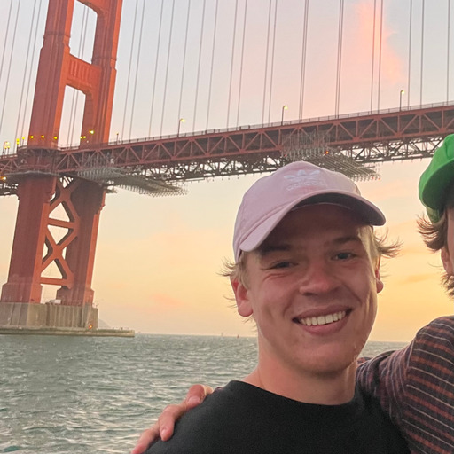
Ronnie Beggs he/him/his
Hi everyone!! I’m a sophomore from the Bay Area studying CS & DS. You may find me hiking around Berkeley, at the gym, or trying every restaurant in town. 61B was my favorite class and I hope I can cultivate that same experience for y’all! Let’s have an amazing semester!!

Royce Ren
Hi! I’m Royce, currently a sophomore studying, well, CS! When I’m not nerding out over Union Find and 61B, you can find me watching anime, playing League (I’m sorry), going gym, and wasting far too much time on YouTube. Super stoked for a great semester :)
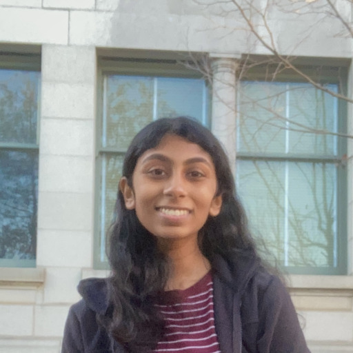
Sahityasree Subramanian she/her/hers
Hi! My name is Sree, and I’m a junior majoring in CS. This is my 2nd time teaching 61B, and it’s one of my favorite classes at Berkeley - I hope you enjoy it as much as I did :) In my free time, I love writing, hiking, and watching movies, and I’ve recently been learning to crochet. Feel free to reach out anytime, and I’m excited to meet you all!
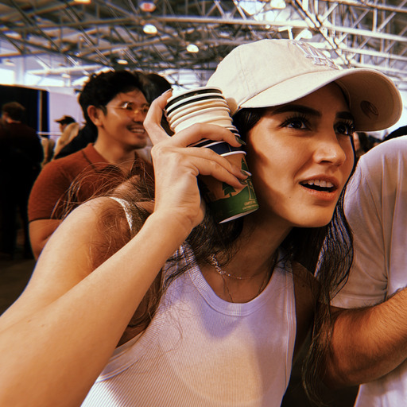
Sophie Nazarian she/her/hers
Hey guys! I’m Sophie, I’m a junior studying BioE and CS. This is my fourth semester on staff, but my first time as a TA :) I like watching sports, hiking and screaming at my screen playing video games. Im really excited to be teaching my favorite CS course, I love questions that tickle my brain so feel free to reach out to me about every and anything!

Teresa Luo she/her/hers
Hello people : ) My name is Teresa and I am a junior studying Computer Science and Data Science. I am from Chengdu, Beijing, and Palos Verdes(LA), currently getting my daily dose of corgi and motorcycle content, trying to learn German, and reading about the history of western art. This is my fourth time teaching 61B and looking forward to a fun semester with you all!
Vanessa Teo she/her/hers
hi! i’m vanessa, a junior from the bay area studying computer science and environmental economics & policy. i like to crochet, play with my cats, and make+listen to every possible genre of music. this is my 4th time teaching 61B (woo!) and am incredibly excited to meet everyone! feel free to reach out anytime—i’m here to help :)

Vika Stukalova she/her
victoria.stukalova@berkeley.edu
Hi! I’m Vika and I’m a third year Computer Science and Data Science major. Some of my interests include hiking, ballet, and skiing! When I’m not debugging something you can find me going on walks around Berkeley or the Fire Trails. There are so many good restaurants in Berkeley but if I had to pick one I’d say it’s Lucia’s (the pizza there is 🤌). A fun fact about me is that I absolutely love carrots and always have at least 3 carrot related items on me. Can’t wait to help teach some data structures :)

William Lee he/him/his
Hi, I’m William and I’m a senior studying CS from Maryland (go ravens!). This is my third time teaching 61B. I enjoy going down history rabbit holes on Wikipedia, riding the new BART trains, and listening to 70s–80s music. I’m super excited to be working with you all this semester!

Wilson Fung he/him/his
Hi everyone! I’m a junior studying CS with a DS minor. I took 61B in Spring 2023 and am now on course staff for the first time and am super excited to be teaching you all! I came into Berkeley as ChemE and changed my major 7+ times LOL! In my free time, I love exploring new food spots, working at cafes, playing volleyball, and vlogging!
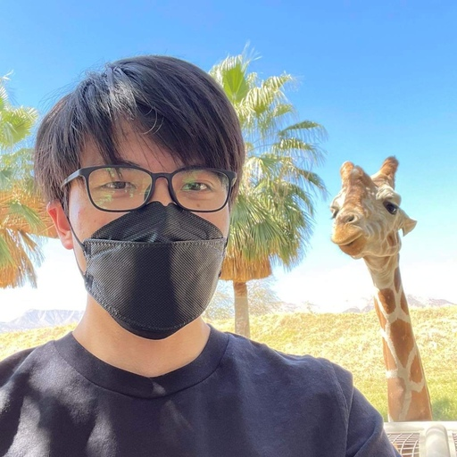
Xifeng Li he/him/his
hi there! I’m Xifeng, a 3rd year CS major from LA! I love music, gardening, board games, Tetris, and of course, CS 61B! feel free to reach out if you need anything at all :)

Yaofu Zuo
Hi! I’m Yaofu(David), a 4th year majoring in CS and Econ. This is my fifth semester teaching 61B and I’m very excited to explore data structures with you!
Tutors
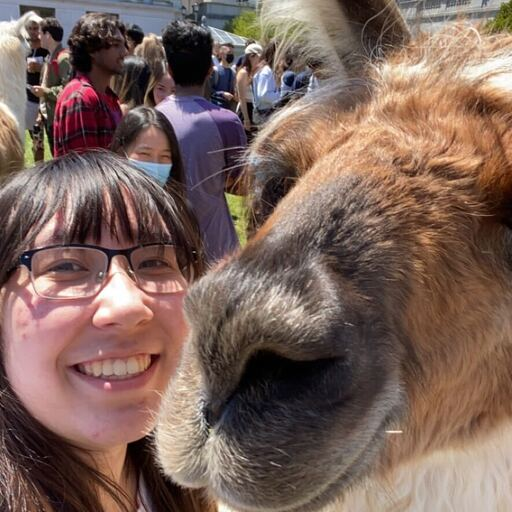
Alyssa Smith she/her/hers
Hey everybody! I’m a third-year majoring in CS + DS and this is my third time being on course staff for 61B(L)! Outside of 61B, you can find me playing JRPGs, consuming concerning amounts of coffee, or finding more K-Pop and obscure indie rock/emo music for my 1000+ song playlist. Excited to help grow y’all’s 61🅱️rains! :DDD

Anirudh Kotamraju he/him/his
Hey! I’m Anirudh, a second-year from the Bay Area studying Computer Science. I love landscape photography, listening to film scores, and bike rides. Excited to meet you!

Annabella Pao-En Chow
Hi! I’m Annabella, Junior transfer EECS major. This is my first time tutoring 61B. I am a biggggggg tkd fan and I’m part of the Berkeley sparring team. Besides that, I love composing music (classical style). Looking forward to meeting y’all this semester!
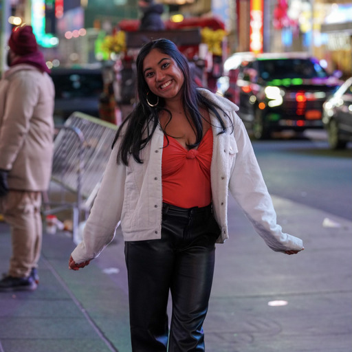
Anushka Mukhopadhyay she/her/hers
Hey guys! My name is Anushka, a sophomore studying EECS from Shrewsbury, Massachusetts. In my free time I enjoy baking, dancing, and playing all racket sports(ping pong, bandminton, and tennis!) I am super excited to working with everyone this semester:)

Ashley Ye she/her/hers
Hi! I’m Ashley and a junior studying EECS. This is my third time tutoring for 61B, and I’m super excited to work with everyone this semester! In my free time, I like to songwrite and listen to Taylor Swift
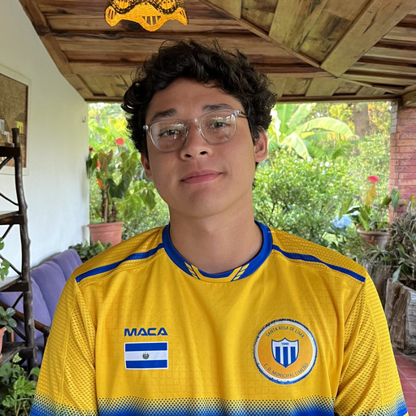
Diego Huezo he/him/his
Hey everyone! My name’s Diego, I’m a junior from El Salvador studying CS and DS. In my free time you can find me swimming, grubbing around campus, or listening to disco music.
Please feel free to shoot me an email at any time! I’m here to help!
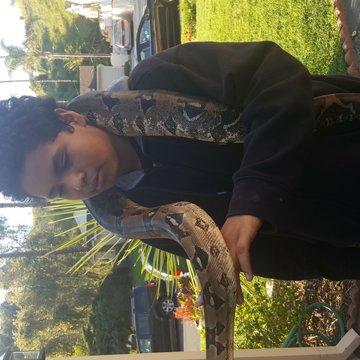
Eduardo Lopez he/him
Hey, I’m Eddie, I enjoy oly lifting and coaching. I’ve been spending the last 12 years working my family taco stand. I also love music and viewpoints

Elaine Shu she/her/hers
Hello, my name is Elaine! I’m a second year CS major with interests in writing and cinematography. I enjoy going on hikes, watching chess twitch, and exploring SF!
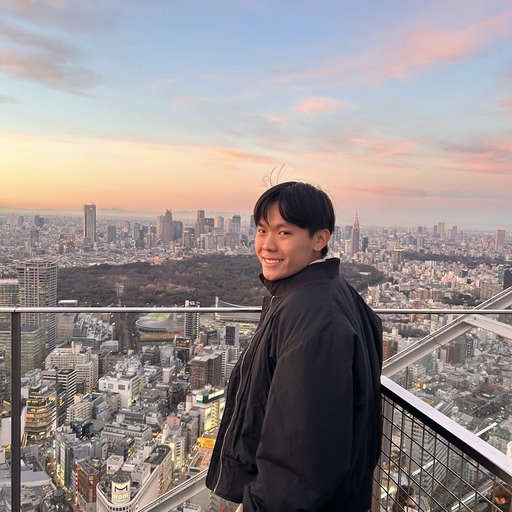
Ethan Tam he/him/his
Hello! I’m Ethan, a sophomore from Chicago studying Computer Science. When I’m not CS61B-ing, I love sale-shopping at Safeway, following award season, listening to Olivia Rodrigo, and playing Smash.

Fiona Chang she/her/hers
Hiya! I’m Fiona, a junior studying Statistics + DS, and I’m excited to be a tutor this semester! Outside of 61B, you’ll catch me missing my cats, cafe hopping, or perfecting my matcha lattes at home. Feel free to reach out if you need anything :)

Hanqi Xiong he/him/his
Hello, I’m Hanqi Xiong and I’m a junior studying computer science and data science. On my free time I love to play video games: Geometry Dash/Dota 2/Clash Royale. Please don’t hesitate to contact me if we have anything in common!

Iris Zhou she/her/hers
hii! i’m iris, a sophomore from san jose studying cs & astrophysics. this is my first time tutoring with 61b! in my free time, i enjoy cafe hopping, skiing, thrifting, and (trying to) make to my own matcha. looking forward to meeting everyone this semester :)
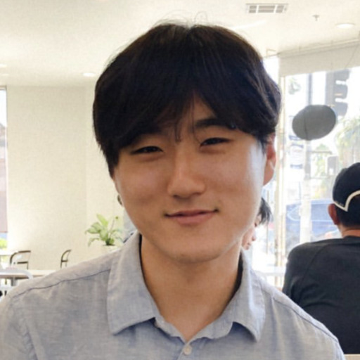
Jacob Taegon Kim he/him/his
Hi, I’m Jacob! I’m a third-year majoring in CS and DS. In my free time, I enjoy running, reading cookbooks, and drinking lots of coffee. Before I came to Berkeley, I was a barista and a baker, so I have many fun and unique experiences that I can share! Feel free to reach out to me for anything. My goal is to support you as best as I can :)

Jai Bhatia he/him/his
Hi I’m Jai, a sophomore studying computer science from Vancouver, Canada! When I’m not teaching 61B, I like to play hockey and enjoy some chipotle. My favourite past exam for 61B has to be Spring 2023 Midterm 2, that one was pretty cool.
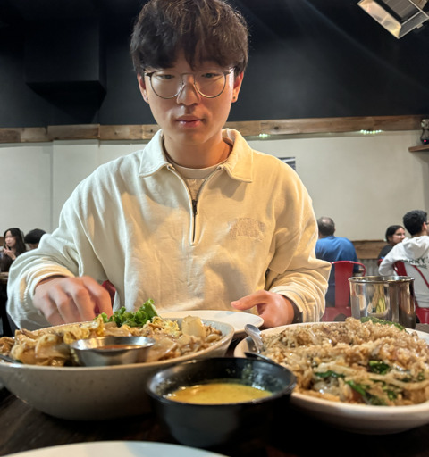
Jeffrey Yum he/him/his
Hey everyone! I’m Jeff, a third year studying EECS from LA. Some things on my bucket list this year are going to Hawaii and picking up a new instrument. Excited to help out this semester!

Josh Barua he/him/his
Hey y’all! I’m Josh, a 3rd year from Austin majoring in CS. When I’m not writing bugs, I love to play indoor and outdoor volleyball, dominate my housemates in mario kart, watch anime (open to recs), and show people photos of my 2 dogs. I’m super excited to meet everyone this semester! Don’t hesitate to reach out if I can help in any way :)
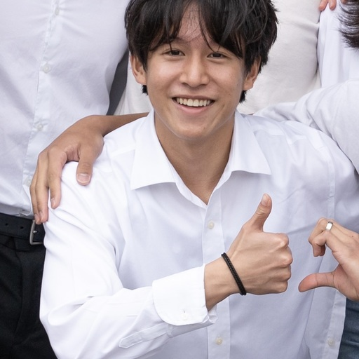
Kenny Chen
hi i’m kenny. i’m a CS major from the Bay Area. i like potatoes, brawl stars, and hitting the gym. excited for the semester!
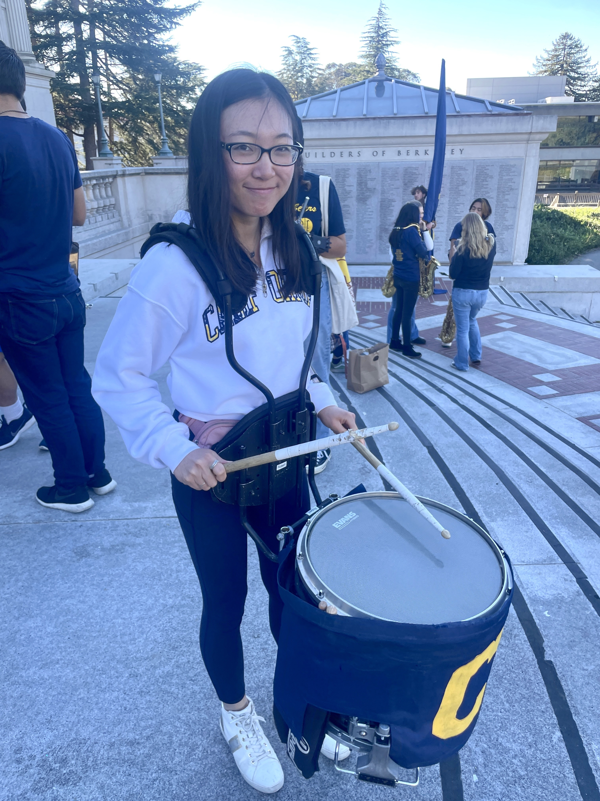
Lauren Lee she/her/hers
Hey! I’m Lauren, a senior from the South Bay Area majoring in data science. 61B holds a special place in my heart, so I’m absolutely thrilled to share the love with everybody. Outside of 61B, you can catch me going on runs, playing piano, reading, or writing. I’m a big Muse fan and am really into learning languages (one of the languages currently on my bucket list is Sindarin). I’d be happy to talk with you about any, all, or none of these things—at the end of the day, I just want to get to know you. Looking forward to a great semester!

Mohammad Shahnawaz he/him/his
mohammadshahnawaz@berkeley.edu
Hi everybody, my name is Mohammad - this is my first time teaching and I’m really excited to get to know you all! I loved 61B when I was taking it and I hope you do too. In my free time, I watch MMA, play video games, lose at poker, and just enjoy life. Let me know if you have any music recs or just want to talk!
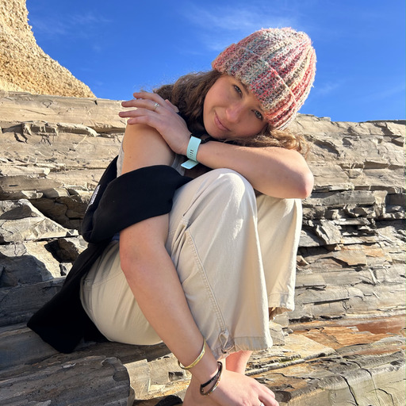
Natalia Grondin she/her/hers
Hi, I’m Natalia and I’m a sophomore in CS. I’m into surfing, camping, and anything outdoors and I’m super excited for this semester!

Noah Yin he/him/his
Hi! I’m Noah a Junior studying CS from New York, I love tennis, anime, thrifting, Snackpassing food, and 61B!! I hate stinky cheeses, cilantro, Tik Tok (actually love it but rots my brain), and Mahito (JJK ifykyk). Feel free to reach out about literally anything :)
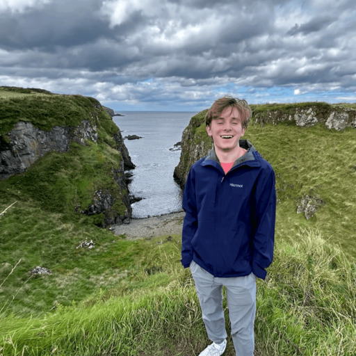
Oliver Petrick he/him/his
Hi! My name is Oliver, but you can call me Ollie. I’m a third year studying cs, and I’m excited to be on 61B course staff for the first time! Outside of class, I like to play basketball, workout, and try new foods.
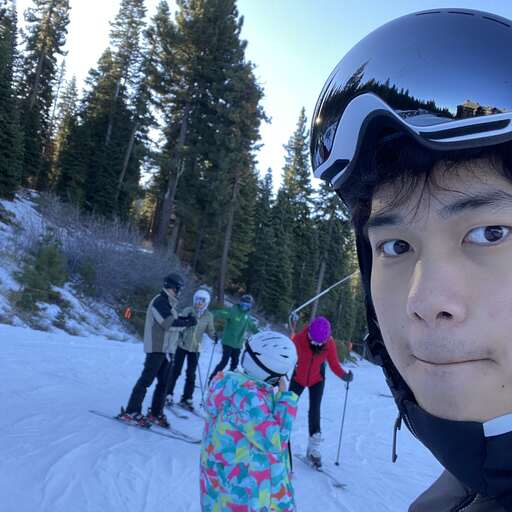
Philip Ye he/him/his
Hey y’all! I’m Philip, a 2nd year studying CS + Math and native Floridian. One time I fell into a mannequin display in Spain but I try not to think about it. My hobbies include daydreaming about being the best at a hobby I just picked up and watching horror movie recaps in YouTube so I can hide in the comments section. Look forward to meeting everyone!

Ryssa Angelica Malibiran she/her/hers
Hi hi~~ I’m Ryssa, and I’m a junior majoring in data science. I’ve been an AI for 61B for 2 semesters, but this is my first semester as a tutor! In my free time, I enjoy crocheting, binge-watching video game play-throughs/anime, listening to j-pop/k-pop/r&b, impulse purchasing silly treats, and playing the violin with the Intermission Orchestra on campus! Feel free to reach out to me about anything :D ✨

Shrithan Sandadi he/him/his
Hi everyone! I’m Shrithan, a second-year CS major from Indiana and this is my first time on course staff. I’m a huge Colts and Pacers fan, and I’m always looking for new movie and show recommendations. Feel free to reach out about anything and I’m excited for a great semester ahead!
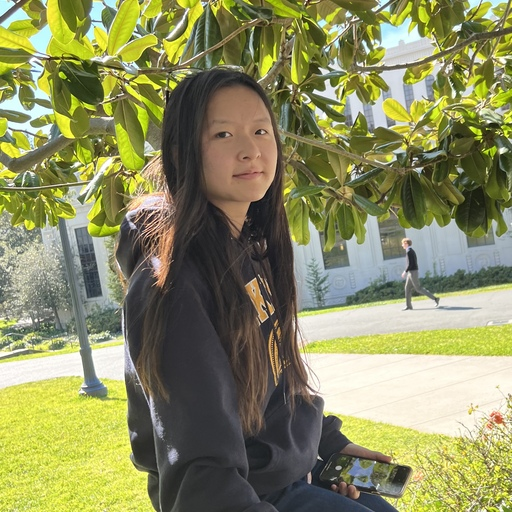
Stacey Lei she/her/hers
Hi! I’m Stacey, a sophomore from Las Vegas studying computer science. In my free time, I love illustrating, swimming, and animating. I’m super excited to meet everyone– feel free to reach out for anything!

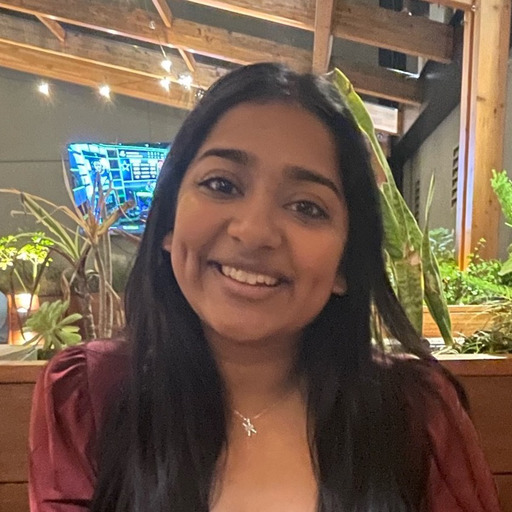
Suhani Singhal sher/her/hers
Hi! I’m a sophomore majoring in EECS & Business Administration. Outside of 61B, I love watching comedy shows and sci-fi films, trying new recipes, and listening to music with friends. Feel free to reach out if you have any questions!

Terrianne Zhang she/her/hers
Hi! I’m Terrianne - sophomore in CS. This is my first time on course staff, and some of my hobbies are playing badminton, video games, and trying new boba spots. I’m looking forward to the semester with everyone!
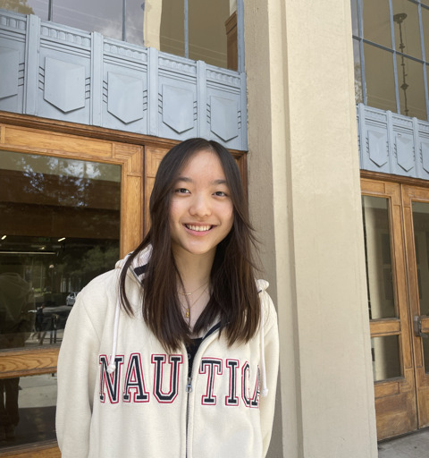
Tiffany Li she/her/hers
Hi everyone! My name’s Tiffany and I’m a sophomore studying CS. Outside of class, I like cafe hopping, hiking, and going to concerts. Excited to meet you all this semester!
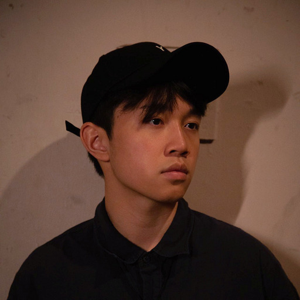
Yunze Du he/him/his
Hi I am Yunze! I’m a 3rd year CS+Econ major from Guangzhou, China. I drink and make (a ton of) specialty coffee, play guitar, and listen to C-R&B/neo-soul and blues rock types of music. Chat with me about hashmap, MST, and heaps but also pour-over, keyboards, and concert tickets!!
AIs

Angela Li she/her
Hi! I’m Angela, I’m a sophomore studying Business and CS. I’m from SF and I love matcha, canes, and just food in general. I’m notorious for being a deeeep sleeper 🦥

Anokhi Shah she/her/hers
Hey everyone! I’m Anokhi, a second-year studying EECS at Berkeley. I’m from the Bay Area and I enjoy dance, travel, photography, and most importantly trying out new food spots around Berkeley. I’m really excited to be an AI for 61B this semester and I look forward to meeting you all!


Carolina Ternero she/her
Hi everyone💗! My name is Carolina and I’m a second year studying CogSci and Linguistics! I love hiking, playing indie games (current obsession is Hollow Knight), and puzzles!! CS61B is my absolute favorite class and I’m so excited to meet ya’ll and help out!! :)

Codey Ma
Hi I’m Codey, a sophomore studying computer science from SoCal :D I love watching youtube, playing games, and playing badminton. I’m so excited to meet yall!

Daniel Wang he/him/his
Hey everyone! I’m Daniel, and I’m a 2nd year CS major from San Diego! I’m really interested in graphic design, friendly super smashing, MEDIAST 168, sipping tea, and many more fun things—looking forward to meeting everyone!!
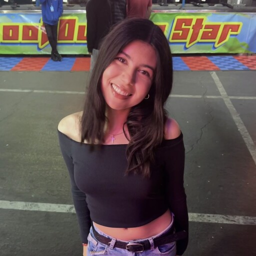
Emily Mesta she/her/ella
Hi! My name is Emily and I’m a sophomore from socal studying CS. Outside of 61b, I love hiking, dancing, and eating at El Talpense (I recommend)! So excited to meet everyone :P
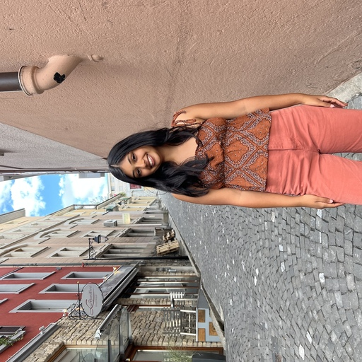
Hiral Patel She/her/hers
Hi! My name is Hiral and I’m a 2nd year Data science major! In my free time I love to dance, watch movies, and try new foods around Berkeley! I look forward to AIing for the first time and meeting you all in lab section :)
Lily Jiang she/her/hers
Hi everyone, I’m Lily from Shenzhen, China. I’m a second-year majoring in CS and Econ. So excited to meet y’all!
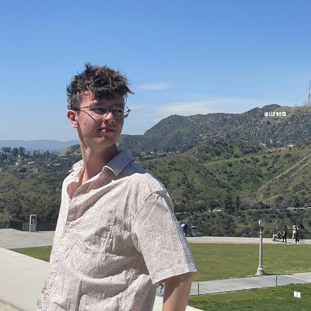
Nazar Ospanov he/him/his
Hey hey! My name is Nazar, and I’m a second-year student from Almaty, Kazakhstan. Whenever I’m not busy I love to explore outdoor spots in the Bay Area, enjoy some good matcha, and play guitar! Super excited for this semester!
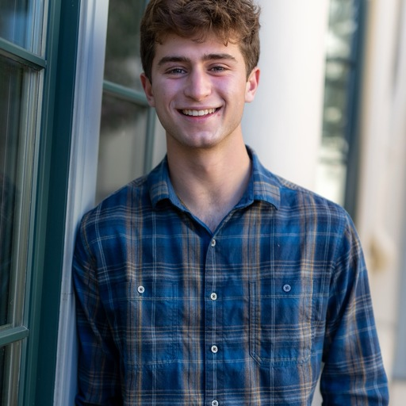
Ozan Ozturk He/Him/His
Hi! My name is Ozan and I’m a sophomore studying CS and Economics. I’m from San Francisco and I grew up playing tennis all over NorCal. In my freetime, I love hitting the gym, playing poker, and hanging out with friends. I’m looking forward to a great semester in CS61B!
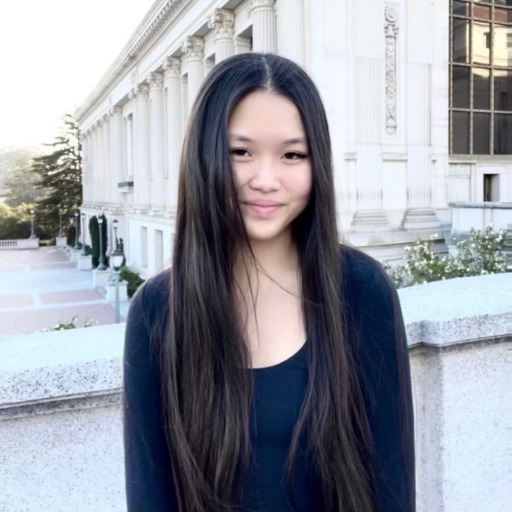
Rachel Hu she/her/hers
hi everyone! i’m rachel and i hail from michigan. a fun fact about me is that i have watched the show rick and morty at least 50 times front to back. 🤖

Ridge Huang he/him/his
Hey everyone, my name is Ridge and I’m a second-year studying DS. Outside of school I play frisbee for Cal, love to work out, and am a huge foodie!

Shreya Mantripragada she/her
Hi! My name is Shreya and I’m a second year double majoring in CS & DS! I really enjoyed CS 61B when I took the class and I’m excited to AI this semester. In my free time, I really enjoy hiking, journaling, and finding cozy new study spots on campus (my favorite are Morrison Library and Yallis). Feel free to reach out if you have any questions!